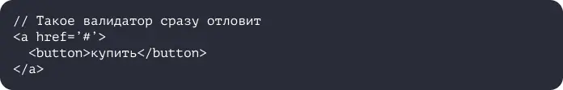

Как тестировать сайты
Чтобы потом не было стыдно
Допустим, вы сделали сайт, но у вас нет тестировщика, который может всё проверить. Вот короткая инструкция, на что смотреть, чтобы с большой вероятностью после запуска всё было в порядке.
Допустим, вы сделали сайт, но у вас нет тестировщика, который может всё проверить. Вот короткая инструкция, на что смотреть, чтобы с большой вероятностью после запуска всё было в порядке.
Предупреждение: статья не претендует на академическую полноту, но точно поможет что-нибудь не упустить.
Что проверять:
- Элементы страницы расположены как на макете на всех устройствах.
- Сайт одинаково выглядит и работает во всех нужных браузерах.
- Кнопки нажимаются и после этого что-то происходит, слайдеры крутятся, гамбургеры раскрываются.
- Все JavaScript-скрипты работают корректно.
- Отображается правильный контент.
- Отдаются нужные заголовки.
- Загружаются правильные шрифты.
- Фавиконка установлена.
- Текст отображается не кракозябрами (в 2020 такое редко, но бывает).
- Курсор интерактивный на интерактивных элементах и обычный на обычных.
- С локализацией всё в порядке (русская, английская версия).
- Страница не разъезжается, если включить блокировщик рекламы.
Иногда используют автоматические тесты, которые сравниваются отрендеренный результат кода аля интерфейс с рендер-версией приложения. Фактически, это сравнение скриншотов. Конечно, автотесты можно подготовить и для тестирования интерактивных элементов.
Инструменты:
- Реальные браузеры и устройства.
- Эмуляторы (BrowserStack, LambdaTest, Browsera, BrowserShots).
Ошибки JavaScript
Если в коде есть ошибки, их будет видно в консоли разработчика. Также там можно обратить внимание на запросы (время и коды ответов) и посмотреть размер загружаемых файлов. И если размер большой, обсудить с разработчиками оптимизацию кода на JavaScript, шрифтов и изображений.
Валидность кода
Нужно убедиться, что код удовлетворяет стандартам HTML/CSS, для этого есть специальные валидаторы.
Инструмент валидации оценивает синтаксис, находит синтаксические ошибки типа пропущенных символов и ошибочных тегов и т.д. И отлавливает одну из частых ошибок вложенности тегов.
Часто в результате сервисы валидации разметки, как и компиляторы в разработке, выдают список, разделённый на предупреждения и ошибки. Разница в критичности. Ошибки с максимальной вероятностью могут создать проблемы в работе кода. Это опечатки (да, техника любит точность), лишние или недостающие знаки. А вот к предупреждениям относятся неточности, которые с минимальной вероятностью навредят работе страницы, но не соответствуют стандартам. Это избыточный код, бессмысленные элементы и другие «помарки».
Инструменты:
- W3C валидатор